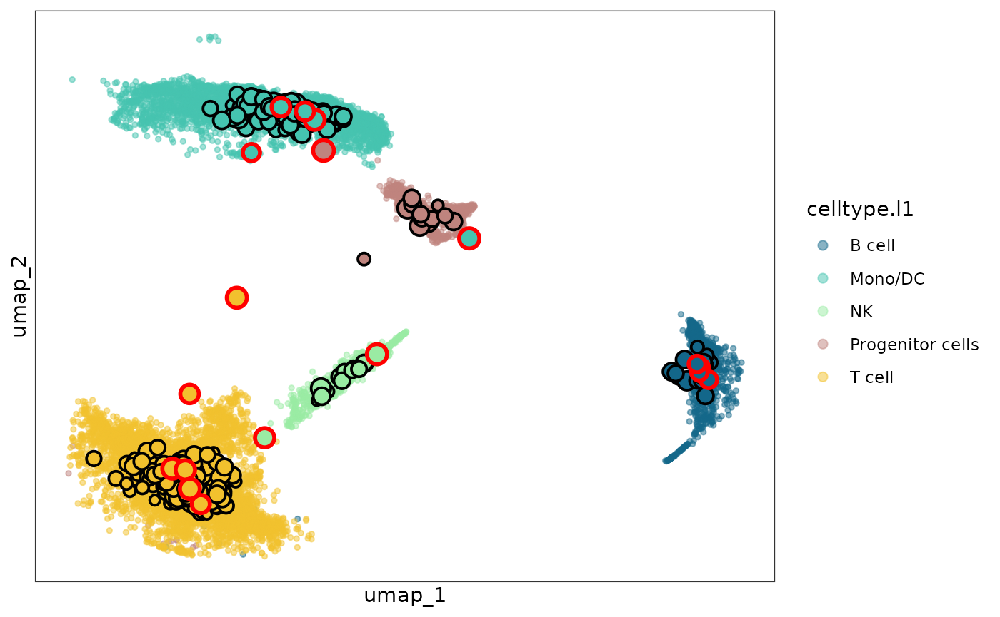

Functionality 2: optimize metacell partitioning
Pan Liu
26 November 2024
mcRigor-2-optimize.RmdIntroduction
In this tutorial, we will show how to use mcRigor to evaluate each metacell partition and select the optimal granularity level for a specific metacell partitioning method. Note that granularity level, , is a key parameter for metacell partitioning defined as the ratio of the number of single cells to the number of metacells, and decent selection of it is of vital importance to ensure the unbiasedness of the metacell profiles and the reliability fo the downstream analysis. We will demonstrate this functionality of mcRigor on a semi-synthetic single cell RNA sequencing (scRNA-seq) dataset with known trustworthiness of metacells and optimal metacell partition.
Input preparation
Two main inputs are required for this functionality: 1. the raw
scRNA-seq data and 2. a series of candidate metacell partitions
generated by a specific metacell partitioning method with a series of
candidate granularity levels. The raw scRNA-seq data needs to be
provided as a Seurat object, obj_singlecell. The
semi-synthetic scRNA-seq data, whose generation process is described in
Liu
and Li, 2024, stored as a rds file syn.rds, is
available with the mcRigor package as an example. We first load the
data.
sc_dir = system.file('extdata', 'syn.rds', package = 'mcRigor')
obj_singlecell= readRDS(file = sc_dir)
obj_singlecell
#> An object of class Seurat
#> 2000 features across 13400 samples within 1 assay
#> Active assay: RNA (2000 features, 2000 variable features)
#> 3 layers present: counts, data, scale.data
#> 2 dimensional reductions calculated: pca, umapThe candidate metacell partitions should be provided as a dataframe,
cell_membership, showing the assignment of single cells to
metacells in each partition. Specifically, each column of this dataframe
should represent the matacell partition corresponding to one granularity
level and each row of the dataframe should represent one single cell.
Note that we require the column namse of the dataframe to be set as the
granularity level values in the character type. The metacell partitions
for the semi-synthetic scRNA-seq data generated by the SEACells method
(Persad et
al., 2023), stored as a csv file
seacells_cell_membership_rna_syn.csv, is available with the
mcRigor package as an example.
membership_dir = system.file('extdata', 'seacells_cell_membership_rna_syn.csv', package = 'mcRigor')
cell_membership <- read.csv(file = membership_dir, check.names = F, row.names = 1)
cell_membership[1:3,1:3]
#> 100 99
#> 1_Cell1 mc100-allcells-SEACell-86 mc99-allcells-SEACell-35
#> 2_Cell1 mc100-allcells-SEACell-26 mc99-allcells-SEACell-35
#> 3_Cell1 mc100-allcells-SEACell-26 mc99-allcells-SEACell-35
#> 98
#> 1_Cell1 mc98-allcells-SEACell-131
#> 2_Cell1 mc98-allcells-SEACell-131
#> 3_Cell1 mc98-allcells-SEACell-131Optimization of hyperparameter selection
We call the function mcRigor_OPTIMIZE to evaluate each
metacell partition in cell_membership and select the
optimal one among them.
optimize_res = mcRigor_OPTIMIZE(obj_singlecell = obj_singlecell, cell_membership = cell_membership)The evaluation scores for the provided metacell partitions are stored
in the score field of the output optimize_res,
and we can draw the line plot of the evaluation scores.
head(optimize_res$scores)
#> gamma DubRate ZeroRate Score
#> 1 2 0.01106557 0.9201214 0.5344065
#> 2 3 0.01193333 0.9021871 0.5429398
#> 3 4 0.01272903 0.8864460 0.5504125
#> 4 6 0.01418433 0.8618650 0.5619753
#> 5 7 0.01459026 0.8507913 0.5673092
#> 6 8 0.01466195 0.8412219 0.5720581
optimize_res$optim_plotThe output optimize_res contains the optimal granularity
level (best_granularity_level), the evaluation score for
the metacell partition given by the optimal granularity level selected
(best_score), and the Seurat object of metacells generated
under the the optimal granularity level (opt_metacell).
opt_metacell = optimize_res$opt_metacell
opt_metacell
#> An object of class Seurat
#> 2000 features across 319 samples within 1 assay
#> Active assay: RNA (2000 features, 0 variable features)
#> 2 layers present: counts, dataNote the optimal metacell partition may still contain dubious
metacells. The mcRigor dubious metacell detection results are recorded
in the metadata of opt_metacell with name
mcRigor. The user may choose to further exclude the dubious
metacells from the optimal partition if lost of information is
bearable.
opt_metacell_tuned = subset(opt_metacell, mcRigor == 'trustworthy')Visualization
The function mcRigor_projection can visualize the
optimal metacell partition, with the metacells projected to the
two-dimensional embedding space of single cells and mark the detected
dubious metacells
sc_membership = opt_metacell@misc$cell_membership$Metacell
names(sc_membership) = rownames(opt_metacell@misc$cell_membership)
plot = mcRigor_projection(obj_singlecell = obj_singlecell, sc_membership = sc_membership,
color_field = 'celltype.l1',
dub_mc_test.label = T, test_stats = optimize_res$TabMC, Thre = optimize_res$thre)
plot
The dubious metacells are marked by red circles while the trustworthy metacells are with black circles.
Session information
sessionInfo()
#> R version 4.4.2 (2024-10-31)
#> Platform: x86_64-pc-linux-gnu
#> Running under: Ubuntu 22.04.5 LTS
#>
#> Matrix products: default
#> BLAS: /usr/lib/x86_64-linux-gnu/openblas-pthread/libblas.so.3
#> LAPACK: /usr/lib/x86_64-linux-gnu/openblas-pthread/libopenblasp-r0.3.20.so; LAPACK version 3.10.0
#>
#> locale:
#> [1] LC_CTYPE=C.UTF-8 LC_NUMERIC=C LC_TIME=C.UTF-8
#> [4] LC_COLLATE=C.UTF-8 LC_MONETARY=C.UTF-8 LC_MESSAGES=C.UTF-8
#> [7] LC_PAPER=C.UTF-8 LC_NAME=C LC_ADDRESS=C
#> [10] LC_TELEPHONE=C LC_MEASUREMENT=C.UTF-8 LC_IDENTIFICATION=C
#>
#> time zone: UTC
#> tzcode source: system (glibc)
#>
#> attached base packages:
#> [1] stats graphics grDevices utils datasets methods base
#>
#> other attached packages:
#> [1] ggplot2_3.5.1 Seurat_5.1.0 SeuratObject_5.0.2 sp_2.1-4
#> [5] mcRigor_1.0 BiocStyle_2.34.0
#>
#> loaded via a namespace (and not attached):
#> [1] RColorBrewer_1.1-3 jsonlite_1.8.9 magrittr_2.0.3
#> [4] spatstat.utils_3.1-1 farver_2.1.2 rmarkdown_2.29
#> [7] fs_1.6.5 ragg_1.3.3 vctrs_0.6.5
#> [10] ROCR_1.0-11 spatstat.explore_3.3-3 htmltools_0.5.8.1
#> [13] sass_0.4.9 sctransform_0.4.1 parallelly_1.39.0
#> [16] KernSmooth_2.23-24 bslib_0.8.0 htmlwidgets_1.6.4
#> [19] desc_1.4.3 ica_1.0-3 plyr_1.8.9
#> [22] plotly_4.10.4 zoo_1.8-12 cachem_1.1.0
#> [25] igraph_2.1.1 mime_0.12 lifecycle_1.0.4
#> [28] pkgconfig_2.0.3 Matrix_1.7-1 R6_2.5.1
#> [31] fastmap_1.2.0 fitdistrplus_1.2-1 future_1.34.0
#> [34] shiny_1.9.1 digest_0.6.37 colorspace_2.1-1
#> [37] patchwork_1.3.0 tensor_1.5 RSpectra_0.16-2
#> [40] irlba_2.3.5.1 textshaping_0.4.0 labeling_0.4.3
#> [43] progressr_0.15.1 fansi_1.0.6 spatstat.sparse_3.1-0
#> [46] httr_1.4.7 polyclip_1.10-7 abind_1.4-8
#> [49] compiler_4.4.2 withr_3.0.2 fastDummies_1.7.4
#> [52] MASS_7.3-61 tools_4.4.2 lmtest_0.9-40
#> [55] httpuv_1.6.15 future.apply_1.11.3 goftest_1.2-3
#> [58] glue_1.8.0 nlme_3.1-166 promises_1.3.0
#> [61] grid_4.4.2 Rtsne_0.17 cluster_2.1.6
#> [64] reshape2_1.4.4 generics_0.1.3 gtable_0.3.6
#> [67] spatstat.data_3.1-4 tidyr_1.3.1 data.table_1.16.2
#> [70] utf8_1.2.4 spatstat.geom_3.3-4 RcppAnnoy_0.0.22
#> [73] ggrepel_0.9.6 RANN_2.6.2 pillar_1.9.0
#> [76] stringr_1.5.1 spam_2.11-0 RcppHNSW_0.6.0
#> [79] later_1.3.2 splines_4.4.2 dplyr_1.1.4
#> [82] lattice_0.22-6 survival_3.7-0 deldir_2.0-4
#> [85] tidyselect_1.2.1 miniUI_0.1.1.1 pbapply_1.7-2
#> [88] knitr_1.49 gridExtra_2.3 bookdown_0.41
#> [91] scattermore_1.2 xfun_0.49 matrixStats_1.4.1
#> [94] stringi_1.8.4 lazyeval_0.2.2 yaml_2.3.10
#> [97] evaluate_1.0.1 codetools_0.2-20 tibble_3.2.1
#> [100] BiocManager_1.30.25 cli_3.6.3 uwot_0.2.2
#> [103] xtable_1.8-4 reticulate_1.40.0 systemfonts_1.1.0
#> [106] munsell_0.5.1 jquerylib_0.1.4 Rcpp_1.0.13-1
#> [109] globals_0.16.3 spatstat.random_3.3-2 png_0.1-8
#> [112] spatstat.univar_3.1-1 parallel_4.4.2 pkgdown_2.1.1
#> [115] dotCall64_1.2 listenv_0.9.1 viridisLite_0.4.2
#> [118] scales_1.3.0 ggridges_0.5.6 leiden_0.4.3.1
#> [121] purrr_1.0.2 rlang_1.1.4 cowplot_1.1.3